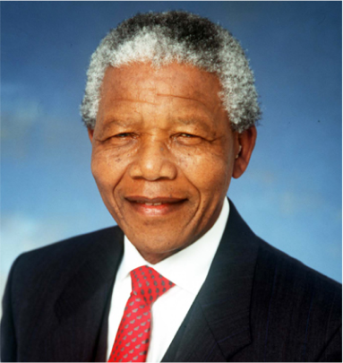
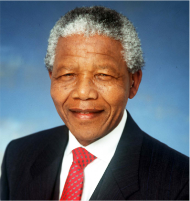

Nelson Mandela
Nelson Mandela (1918 - 2013)
Nelson Rolihlahla Mandela (also known as Madiba; 18 July 1918 – 5 December 2013) was a South African anti-apartheid activist and politician who served as the first President of South Africa from 1994 to 1999.
He was the country's first black head of state and the first elected in a fully representative democratic election. His government focused on dismantling the legacy of apartheid by fostering racial reconciliation.
Ideologically an African nationalist and socialist, he served as the President of the African National Congress (ANC) party from 1991 to 1997.
I either win or learn"
Mandela served 27 years in prison, split between Robben Island, Pollsmoor Prison and Victor Verster Prison, amid growing domestic and international pressure and fears of racial civil war. He was released in 1990 and led efforts to negotiate an end to apartheid, which resulted in the 1994 multiracial general election in which he was elected president.
Leading a broad coalition government which promulgated a new constitution, Mandela emphasized reconciliation between the country's racial groups and created the Truth and Reconciliation Commission to investigate past human rights abuses. Economically, Mandela's administration retained its predecessor's liberal framework despite his own socialist beliefs, also introducing measures to encourage land reform, combat poverty and expand healthcare services.
 
